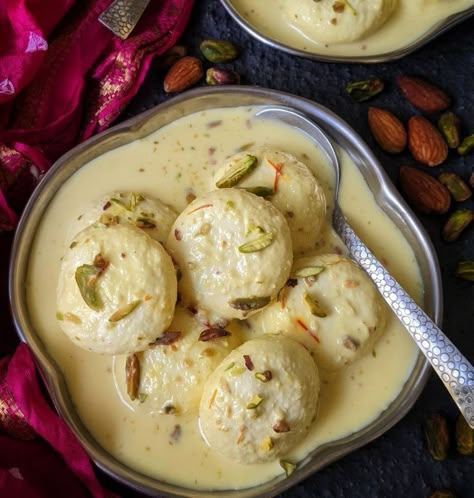

Ingredients
- 1 liter milk (for paneer)
- 1 liter milk (for rabri)
- 3/4 cup sugar
- Cardamom powder
- Saffron strands
- Nuts for garnish
Instructions
- Make paneer, knead, and shape into balls. Boil in sugar water.
- Boil milk, reduce, add sugar, cardamom, saffron.
- Squeeze rasgullas and soak in rabri.
- Cool and garnish with nuts.